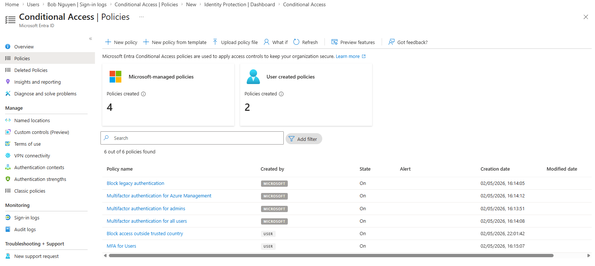
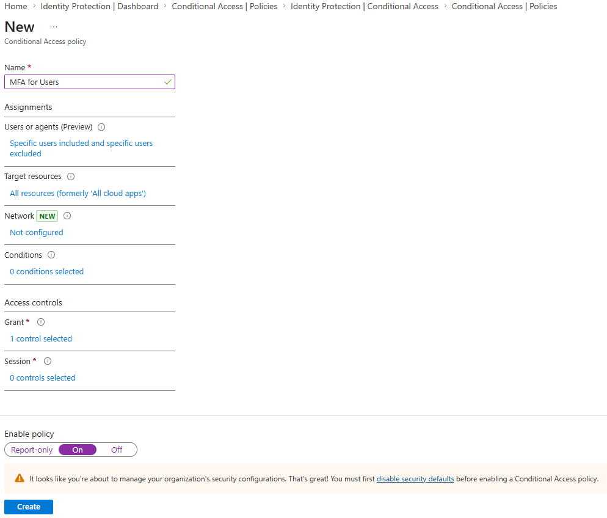
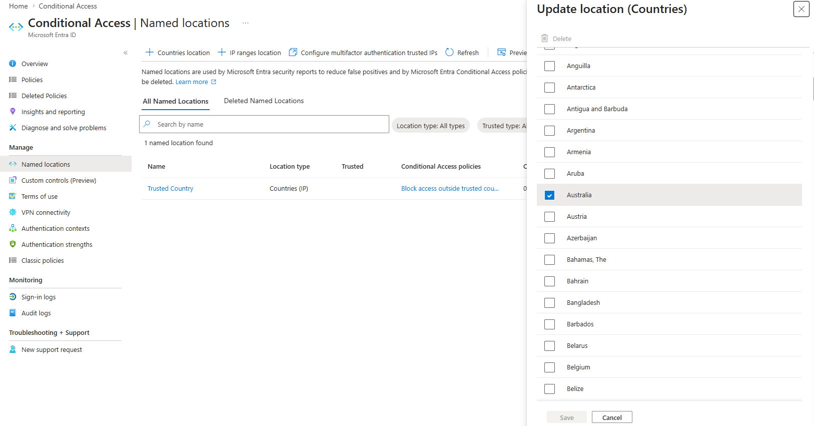
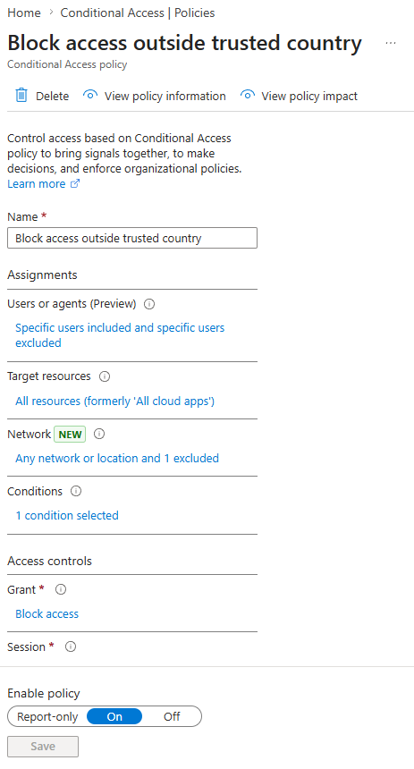
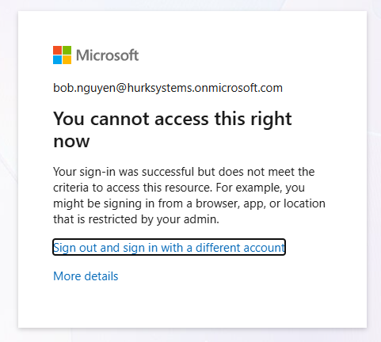
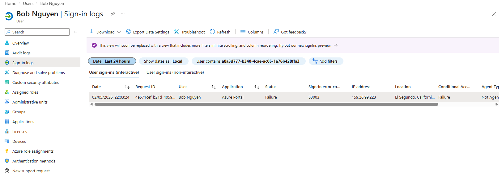

MS-102 Lab 5 - Conditional Access Policies
Published: May 02, 2026
Overview
This lab focuses on configuring Conditional Access policies in Microsoft Entra ID to control how users access resources. It replaces basic protections like Security Defaults with more flexible and targeted security controls.
Before You Start
- Do not lock yourself out
- Keep your admin account excluded if needed
- Test with Alice and Bob first
Objective
Manage access in Microsoft 365 where:
- Conditional Access policies are created
- Access is controlled based on conditions
- MFA is enforced using policies
- Security is applied at a granular level
Requirements
Devices / Tools
- Microsoft 365 tenant
- Admin access account
- Test user accounts (Alice / Bob)
Tasks
Task 1 - Explore Conditional Access
Go to:
- Entra ID > Protection > Conditional Access
Review:
- Policies
- Named locations
- What-If tool
What is Conditional Access?
Conditional Access is a policy-based system that applies controls such as MFA or blocking access based on specific conditions like user, location, or device.
Where are Conditional Access policies managed?
Conditional Access policies are managed under Entra ID > Protection > Conditional Access.

Task 2 - Disable Security Defaults
Go to:
- Entra ID > Overview > Properties > Manage security defaults > Disabled > Select "My organization is planning to use Conditional Access" > Save > Disable
Why must Security Defaults be disabled before using Conditional Access?
Security Defaults must be disabled because they conflict with Conditional Access, as both control authentication and access policies.
Task 3 - Create a Conditional Access Policy
Create a new policy:
- Name: Require MFA for HR Team
Assignments:
- Users:
- Include: Select users and groups > HR Team
- Exclude: Select users and groups > Your admin account
- Target resources:
- Include: All resources (formerly "All cloud apps")
Access controls:
- Grant:
- Require multi-factor authentication
Enable policy:
- On

Task 4 - Test the Policy
Log in as Alice:
- https://portal.office.com
What happens during login?
The user is prompted to complete MFA verification during login.
Is MFA required now through policy?
MFA is now required for users in the HR Team through the Conditional Access policy.
Task 5 - Create a Location-Based Policy
Go to:
- Entra ID > Protection > Conditional Access > Named locations
Create:
- Name: Trusted Country
- Location type: Countries
- Select: Australia

Then create policy:
- Name: Block access outside trusted country
Go to:
- Entra ID > Protection > Conditional Access > Policies > + New policy
Assignments:
- Users:
- Include: Select users and groups > IT Team
- Exclude: Select users and groups > Your admin account
- Target resources:
- Include: All resources (formerly "All cloud apps")
Conditions:
- Locations:
- Include: Any location
- Exclude: Trusted Country
Access controls:
- Grant:
- Block access
Enable policy:
- On

Task 6 - Test Location Policy
Attempt login as Bob.
What happens when logging in from outside the trusted location?
The user receives an access blocked message indicating that sign-in is restricted by a Conditional Access policy.
Is access blocked?
Access is blocked when logging in from outside the trusted country.
This demonstrates how Conditional Access can enforce geographic restrictions to prevent unauthorized access from outside trusted regions.

Task 7 - Verify in Entra ID
Go to:
- Entra ID > Users > Alice / Bob
Check:
- Sign-in logs
- Conditional Access status

Knowledge Test
1. What is Conditional Access?
Conditional Access is a policy framework that controls access to resources based on conditions such as user identity, location, device, or risk level.
2. What is the difference between MFA and Conditional Access?
MFA is a security method that requires multiple forms of authentication, while Conditional Access is a policy system that determines when MFA or other controls should be applied.
3. Why is Conditional Access more powerful than Security Defaults?
Conditional Access is more powerful than Security Defaults because it allows granular control, such as applying policies to specific users, groups, locations, or applications.
4. What conditions can be used in Conditional Access policies?
Conditional Access policies can use conditions such as users or groups, locations, devices, client apps, and sign-in risk.
5. What happens if multiple Conditional Access policies apply to a user?
If multiple Conditional Access policies apply to a user, all applicable policies are evaluated and enforced together.